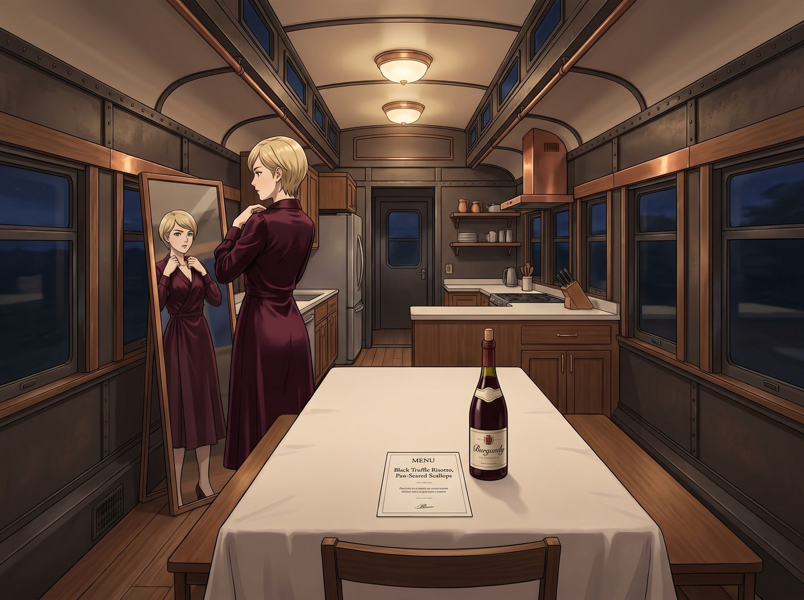

多巴胺斷食

一、週五晚上七點半
中節車廂的餐桌上，鋪著一條漿洗得筆挺的亞麻桌布。
Victoria 站在穿衣鏡前，調整了一下身上那件深酒紅色的絲質洋裝——低調，貴得驚人。桌上只擺著一張列印出來的菜單，是她花了三天跟湯森港一位私廚敲定的：黑松露燉飯，香煎干貝。菜還沒開始做。她跟私廚說好了，等視訊一接通，她傳一則訊息過去，對方才開火——干貝必須在上桌前幾分鐘才下鍋，從湯森港開過來二十分鐘，剛好。桌上唯一已經準備好的，是旁邊那瓶醒了一個小時的勃艮第。
今晚原本是一場線上晚餐會。她打算一邊在鏡頭前優雅地切干貝，一邊說服舊金山那位科技新貴，投資她和 Max 正在籌備的新銳藝術家基金。
桌上的平板響起視訊來電的聲音。
Victoria 深吸一口氣，臉上瞬間掛起一個無懈可擊的社交微笑，按下接聽。
「嗨，Victoria！」螢幕那頭是一個穿著連帽衫、坐在私人飛機機艙裡的禿頂男人，「真的非常抱歉——我的健康教練剛剛提醒我，今晚開始要進行三天的『多巴胺斷食』，配合液體排毒。所以今晚的晚餐恐怕得取消了。下個月再讓我的助理跟妳約，好嗎？」
Victoria 臉上的笑容，連一毫米都沒有動。
「當然，Richard，我完全理解。」她的聲音甜美而得體，「健康永遠是第一位的。祝您排毒順利，我們下個月再聊。」
通話切斷的那零點一秒，她的笑容消失了。
那個眼神，大概跟白雪公主的後母聽見魔鏡說出別人名字的時候差不多。如果她手上有一顆毒蘋果，她會毫不猶豫地順著 Starlink 的訊號，把它塞進那個男人嘴裡。
「多巴胺斷食。」
她把平板往沙發上一摔，雙手叉腰，開始在車廂裡來回踱步。
「一個連勃艮第跟波爾多都分不出來的暴發戶。三年前還在車庫裡吃泡麵，現在居然敢放 Chase 家的鴿子？」她停下腳步，「他需要斷食的不是多巴胺。是他腦子裡那些不知道從哪裡灌進去的廢水。」
她抓起手機，打給私廚，冷冷地取消了那份還沒開火的晚餐。沒有生意要談，她才不會在一個沒有觀眾的週五晚上，一個人對著空氣吃一份四百美元的松露燉飯。
掛掉電話，車廂一下子安靜了。
Chloe 和 Max 去波特蘭看一場地下樂團的演出了。Lily 去了西雅圖一個開源軟體的聚會。Kate 去了隔壁棚子餵兔子。整節車廂，只剩下她一個人，和一張鋪著亞麻桌布的空桌子。
二、兔子的味道
門開了。
Kate 從外面走進來，外套上沾著幾根乾草，手裡還拿著一個空了的飼料碗。她剛去隔壁棚子餵完兔子。
她看見 Victoria 站在空蕩蕩的餐桌旁，周圍的空氣冷得能結霜。
「那位投資人取消了？」
「他去喝他的有機泥巴水了。」Victoria 扯下脖子上的珍珠項鍊，隨手扔在桌上，整個人重重地跌進沙發裡，「更糟的是，我剛才連晚餐也一起取消了。現在我又餓又火大。」
Kate 脫下外套，走過來。
Victoria 立刻往沙發另一頭縮了縮，皺起鼻子：「妳身上有兔子的味道。」
「我剛餵完牠們。」
「哪一隻？」Victoria 瞇起眼睛，「是不是那隻棕色的？耳朵有一邊比較塌的那隻？」
Kate 想了一下：「Cinnamon？」
「就是牠。」Victoria 的語氣陰沉下來，「牠看我的眼神不對。跟當年 Blackwell 天台溫室裡那隻一模一樣。」
Kate 愣了一秒，然後忍不住笑出聲來。
那是很多年前的事了。Victoria 為了討好她，穿著一身設計師工裝和小羊皮手套跑上天台溫室，往她的秋海棠裡灌了半瓶頂級蘭花營養液，被一條蚯蚓嚇得摔碎了花盆，最後被一隻巴掌大的兔子追著繞了溫室整整兩圈，一屁股坐進泥地裡。
「Cinnamon 就是牠的孫女。」Kate 說。
Victoria 的臉色變了。
「……我就知道。」她咬著牙，「那個家族對我有世仇。」
「牠們只是想聞聞妳身上的香水。」
「那天我身上是蘭花營養液。」
「對，」Kate 笑著說，「牠們很喜歡。」
Victoria 沒再說話，只是把自己往沙發深處埋得更深了一點。
她的目光掃過茶几，然後停住了。
茶几正中間，放著一個極度刺眼的物體：一包吃了一半的家庭號起司味多力多滋。袋口整整齊齊地折了三折，上面夾著一個木頭夾子——Max 暗房裡夾底片用的那種。
Chloe 和 Max 出門前留下的。
三、咔嚓
Victoria 盯著那個印著俗氣火焰圖案的鋁箔袋。
平常，這種充滿了人工色素、味精和起司粉的「浣熊飼料」，光是出現在她的視線範圍裡，就足以讓她皺眉。
但現在，她穿著一件三千美元的絲質洋裝，肚子餓得發疼，剛剛被一個要去斷食多巴胺的暴發戶放了鴿子。
去他的卡路里。去他的體面。
她伸手，一把扯掉了那個木頭夾子。
她用兩根塗著裸色指甲油的手指，像捏著某種生化樣本一樣，從袋子裡拈出一片橘紅色的三角形，帶著一種壯士斷腕的表情，塞進嘴裡，狠狠一咬。
「咔嚓。」
極其響亮的碎裂聲，在安靜的車廂裡迴盪。
鹽、味精、人工起司粉，一起在舌頭上炸開，非常粗暴地敲打著大腦。
Victoria 咀嚼的動作停了一秒，眉毛微微一挑。
她一言不發地再次把手伸進袋子。這次抓了兩片。塞進嘴裡，用一種彷彿在咬碎某位投資人頭骨的力道，咔嚓咔嚓地嚼了起來。
Kate 站在旁邊，看著這位平常連喝水都要挑礦物質含量的大小姐，穿著高訂洋裝，一臉兇狠地跟一包多力多滋搏鬥，嘴角還沾著一點非常破壞氣氛的橘色粉末。
她忍住笑，轉身走到吧台邊。
她拿起那瓶勃艮第，倒了一杯，又從冰箱裡拿出一瓶氣泡葡萄汁，給自己倒了一杯。然後走回沙發，坐下，把那杯紅酒遞給 Victoria。
「聽說，」她自己也從袋子裡拿了一片，「勃艮第配起司味玉米片，是絕配。」
Victoria 看著那杯紅寶石色的酒，又看了看 Kate 手裡那杯冒著細小氣泡的淡金色液體。
「妳那杯是什麼？」
「葡萄汁。」Kate 舉起杯子，「也是葡萄。」
Victoria 緊繃了一整晚的肩膀，終於垮了下來。
她沒有去拿紙巾，直接用那隻乾淨的左手接過酒杯，和 Kate 的杯子輕輕碰了一下。
「要是讓勃艮第的酒莊主人知道，我們拿這瓶酒配垃圾食品，」她喝了一大口，「他會當場心臟病發作。」
她把雙腿毫無形象地蜷進沙發裡，把那包多力多滋往 Kate 懷裡塞了一半。
「吃快一點，Marsh。我們得在 Price 回來之前把這包東西處理掉。」她說，「我死都不會讓她知道，我吃了她的存糧。」
「那她問起來怎麼辦？」
Victoria 想了想。
「就說是兔子吃的。」
「兔子不吃多力多滋。」
「Cinnamon 會。」Victoria 面無表情地又塞了一片進嘴裡，「那個家族，什麼事都幹得出來。」
四、凌晨一點
Chloe 和 Max 回到營地的時候，車廂裡已經沒有人了。
茶几上，那包多力多滋還在原位。袋口整整齊齊地折了三折，木頭夾子嚴絲合縫地夾在上面，跟她們出門前一模一樣。
Chloe 打了個哈欠，順手拿起來，想抓一把當宵夜。
袋子輕得像是裡面只裝了空氣。
她拆下夾子，往裡面看了一眼。
空的。連碎渣都沒剩。
「……Max。」
「嗯？」
「我們出門前，這包還剩一半，對吧？」
Max 湊過來看了一眼，又看了看那個夾得一絲不苟、比她自己夾得還整齊的木頭夾子。
然後她的目光落在茶几的玻璃桌面上。
那裡有一圈很淡很淡的紅色酒漬，顯然被人用紙巾擦過，但沒擦乾淨。酒漬旁邊，還有一個小小的、橘紅色的指紋。
Max 什麼都沒說，只是默默地轉頭，看向通往尾節車廂的那扇門。
「……Chase。」Chloe 說。
「要叫醒她嗎？」
Chloe 低頭看了看手裡那個空袋子，和那個被夾得一絲不苟的木頭夾子。
「不用了。」她把夾子取下來，還給 Max，咧嘴笑了，「她連夾子都幫我們夾回去了。這是我見過最有禮貌的小偷。」